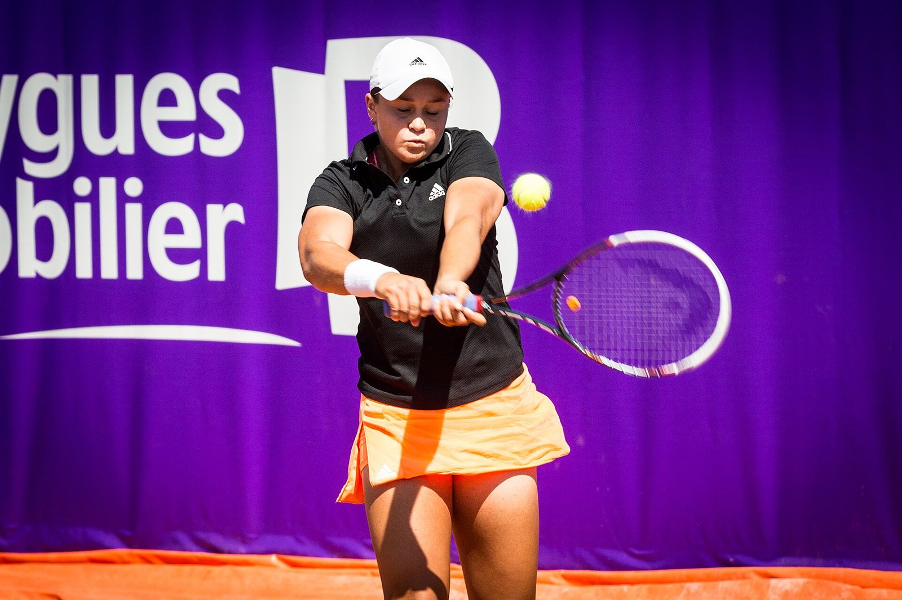

Sports · Tennis
Internationaux de Strasbourg presented by Mammotion 2027
- Dates
- –
- Venue
- Tennis Club de Strasbourg
- Location
- Strasbourg, France
- Format
- In-person
- Category
- Tennis
- Industry
- Tennis
- Organiser
- WTA
- Official website
- https://www.wtatennis.com/tournaments/406/strasbourg/2027
About
Dates are local civil dates for this official WTA 500, from the official WTA tournament record fetched 24 Nov 2026.
Topics: WTA 500, tennis.
No organiser attendance figure found on the official pages fetched 24 Nov 2026 for this upcoming edition. Ranked by our estimated size tier 'medium' (10,000-30,000 attendees/visits), a judgement from format, venue and scale, not an official number.